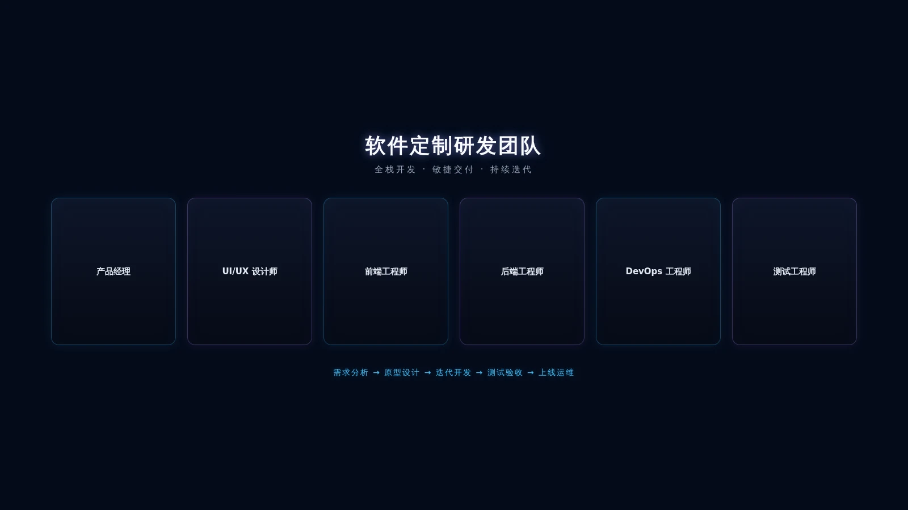

Développement Logiciel Sur Mesure
Développement logiciel sur mesure pour gouvernements et entreprises.
Aperçu du Service
AXLTeco fournit des services complets de développement logiciel sur mesure pour les clients gouvernementaux et entreprises. Nous nous spécialisons dans les systèmes logiciels de haute qualité et évolutifs couvrant les applications Web, mobiles, mini-programmes, plateformes de gestion et SaaS.
Couverture Complète
De l'analyse des besoins, du prototypage, de la conception UI/UX, du développement, des tests au déploiement.
Multi-Technologies
Frontend Vue/React, Backend Java/Go/Python, Mobile Flutter/React Native, Bases de données MySQL/PostgreSQL/MongoDB.
Expertise Sectorielle
Expertise approfondie dans la construction, le transport, l'énergie et le secteur public.
Garantie de Livraison
Développement agile avec sprints bi-hebdomadaires, réponse rapide aux changements.
Conformité Sécurité
Conformité aux normes de sécurité, audit de code, tests de pénétration, chiffrement des données.

Portée du Service
Application Web
Sites web d'entreprise, plateformes e-commerce, tableaux de bord, systèmes B/S.
Application Mobile
Apps natives et cross-platform iOS/Android pour la gestion de terrain.
Mini-Programme
Mini-programmes WeChat, Alipay et DingTalk pour un accès utilisateur léger.
Système de Gestion
Systèmes RH, entrepôt, budget, sécurité et qualité adaptés aux processus métier.
Intégration Système
Intégration ERP, CRM, OA, développement API et interopérabilité des données.
Plateforme SaaS
Architecture multi-locataires, facturation par abonnement, gestion des permissions.
Processus de Service
Besoins
Quoi : Analyse approfondie des scénarios métier et points de douleur.
Livrable : Document de besoins, liste des fonctionnalités.
Durée : 1-2 semaines.
Responsable : Chef de Produit.
Proposition
Quoi : Sélection technique, conception d'architecture, estimation.
Livrable : Proposition technique, plan de projet, devis.
Durée : 1 semaine.
Responsable : Responsable Technique.
Conception
Quoi : Prototypage interactif, design UI, revue UX.
Livrable : Prototype haute fidélité, maquettes UI.
Durée : 2-3 semaines.
Responsable : Designer UI/UX.
Développement
Quoi : Développement frontend, backend, base de données, API.
Livrable : Système fonctionnel, code source, docs API.
Durée : 4-12 semaines.
Responsable : Équipe de Développement.
Tests
Quoi : Tests fonctionnels, performance, sécurité, recette utilisateur.
Livrable : Rapports de tests, rapports d'acceptation.
Durée : 2-3 semaines.
Responsable : Ingénieur QA.
Déploiement
Quoi : Mise en place environnement, migration données, mise en production.
Livrable : Docs de déploiement, manuel d'exploitation.
Durée : 1 semaine.
Responsable : Ingénieur DevOps.
Maintenance
Quoi : Corrections, itérations fonctionnelles, optimisation performance.
Livrable : Versions mises à jour, plans d'itération.
Durée : En continu.
Responsable : Équipe Support.
Capacités Techniques
Frontend
Vue 3, React, TypeScript, Tailwind CSS, Element Plus, Ant Design
Backend
Spring Boot, Go, Python, Node.js, Microservices, RESTful API
Mobile
Flutter, React Native, Swift, Kotlin, Mini-Programme WeChat
Base de Données
MySQL, PostgreSQL, MongoDB, Redis, Elasticsearch
Cloud
AWS, Alibaba Cloud, Tencent Cloud, Docker, Kubernetes, CI/CD
Intégration IA
Intégration LLM, RAG, développement Agent, recommandation intelligente
Avantages et Garanties
Savoir-faire Sectoriel
Années d'expérience sur les marchés africains, connaissance des scénarios métier locaux.
Livraison Agile
Sprints bi-hebdomadaires, réponse rapide aux changements, réduction du time-to-market.
Assurance Qualité
Revue de code, tests automatisés, CI/CD pour garantir la qualité.
Alignement Besoins
Plusieurs rounds de communication pour aligner développement et objectifs métier.
Formation
Formation à l'utilisation du système et documentation technique pour prise en main rapide.
Support Recette
Accompagnement à la recette utilisateur avant mise en production.
Garantie
3 mois de maintenance gratuite après mise en production, corrections de bugs incluses.
Support Technique
Support technique 7j/7 24h/24, équipe locale au Nigeria disponible sur site.
Itération Continue
Clients à long terme bénéficient d'itérations prioritaires et de mises à jour fonctionnelles.